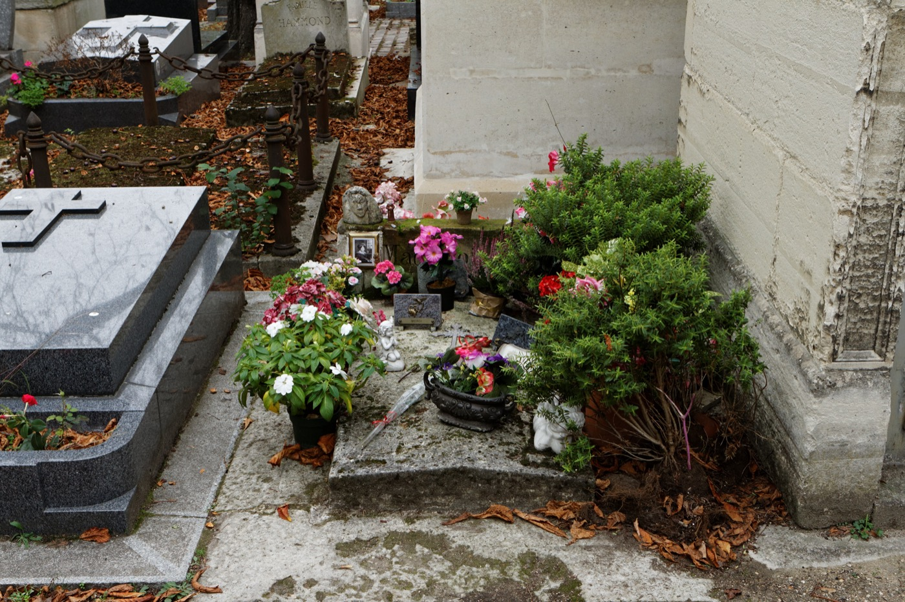

雷 诺 曼 秘 仪
LENORMAND ORACLE · 三十六张小神谕
壹 · 默念你的问题
问题越具体，牌的回答越清晰。雷诺曼擅长具体事务：某件事的走向、某个人的态度、某个选择的结果。写下它，抽牌前请在心中默念三遍。
贰 · 选择牌阵
叁 · 洗牌仪式
🂠
依北斗次序点亮七星 —— 每一次落指的位置与瞬间，都将注入牌堆
七星点齐后，按住下方按钮闭眼凝神默念问题，感觉到了再松手 —— 松手的一瞬即是切牌的一瞬。

牌灵 · Mlle Marie-Anne Lenormand（1772–1843），雷诺曼牌以她为名。
长眠于巴黎拉雪兹神父公墓第 3 墓区，一百八十年来墓前四时有花。
« Cri de l'honneur » —— 她 1821 年的著作，本阵以此为封印语，已织入每一次切牌。
墓照：Pierre-Yves Beaudouin / Wikimedia Commons / CC BY-SA 4.0
长眠于巴黎拉雪兹神父公墓第 3 墓区，一百八十年来墓前四时有花。
« Cri de l'honneur » —— 她 1821 年的著作，本阵以此为封印语，已织入每一次切牌。
墓照：Pierre-Yves Beaudouin / Wikimedia Commons / CC BY-SA 4.0